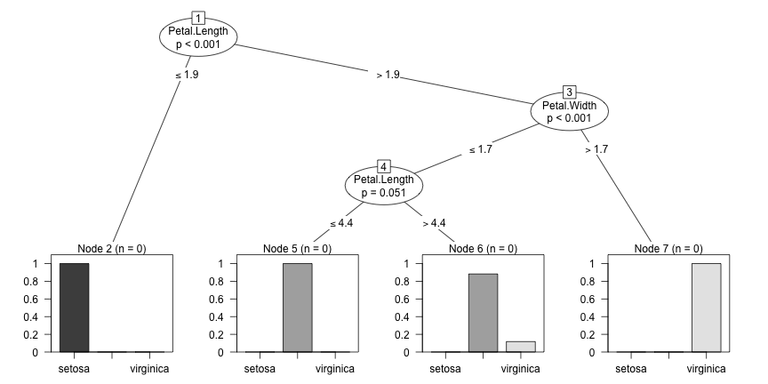

- Design a Simple Data Product using Shiny / R
- Set Up a Presentation of the project
party Package and its variant of Random ForestsDavid Meyer, Achim Zeileis, and Kurt Hornik (2006). The Strucplot Framework: Visualizing Multi-Way Contingency Tables with vcd. Journal of Statistical Software, 17(3).
party Package and cforest Functionlibrary(datasets)
library(party)
## Warning: package 'party' was built under R version 3.1.1
## Loading required package: grid
## Loading required package: zoo
##
## Attaching package: 'zoo'
##
## Les objets suivants sont masqués from 'package:base':
##
## as.Date, as.Date.numeric
##
## Loading required package: sandwich
## Warning: package 'sandwich' was built under R version 3.1.1
## Loading required package: strucchange
## Loading required package: modeltools
## Loading required package: stats4
cf <- cforest(Species ~ ., data = iris, control=cforest_unbiased(ntree=12, mtry=4))
pt <- party:::prettytree(cf@ensemble[[1]], names(cf@data@get("input")))
nt <- new("BinaryTree")
nt@tree <- pt
nt@data <- cf@data
nt@responses <- cf@responses
